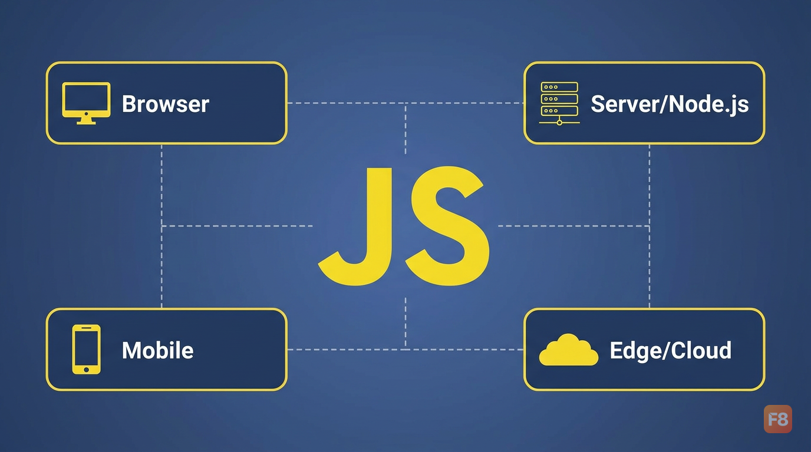
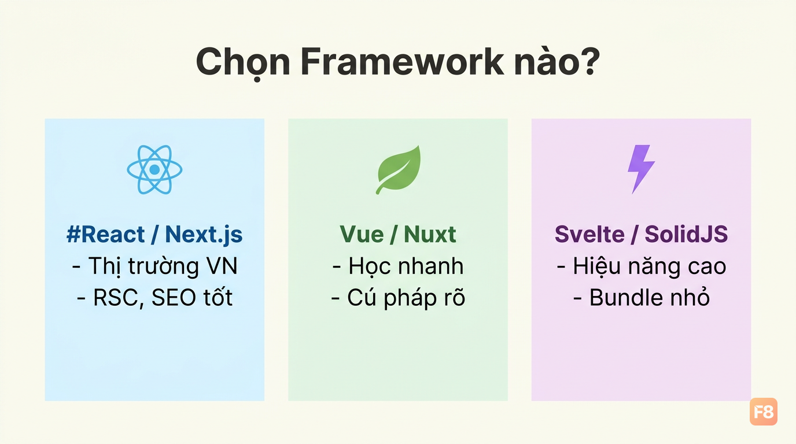
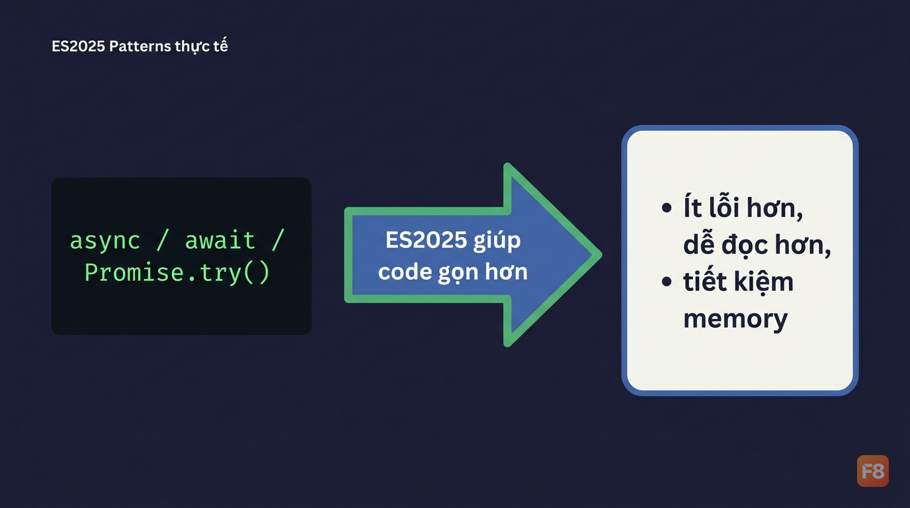
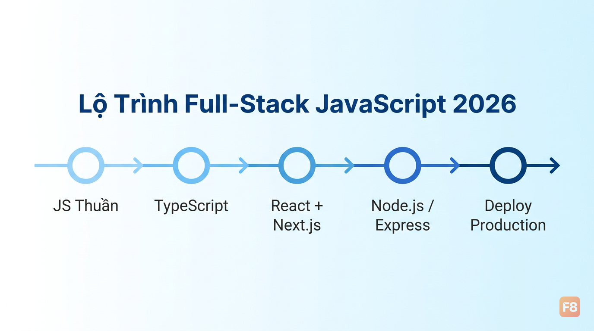

JavaScript Vẫn Số 1 Lập Trình Web 2026: Hệ Sinh Thái Đồ Sộ Cho Full-Stack Dev Việt
Đăng ngày.
Ếch Trendy
Tại sao JavaScript vẫn thống trị web dev năm 2026?
Mình nhớ hồi 2020 còn nghe mấy anh senior nói "JavaScript sắp bị thay thế rồi". Năm 2026, ngôn ngữ đó vẫn đứng số 1. Không phải vì thiếu đối thủ - mà vì nó giải quyết được vấn đề mà không ngôn ngữ nào làm tốt hơn: chạy ở mọi nơi với một codebase duy nhất.
heo khảo sát Stack Overflow 2025, JavaScript chiếm 66% (Stack Overflow Developer Survey 2025) trong số các ngôn ngữ được dùng nhiều nhất toàn cầu. Con số này đã duy trì vị trí top từ hơn 10 năm liên tiếp.

Lý do cốt lõi? Full-stack unity. Bạn học JS một lần, dùng được cho:
-
Frontend:
React,Vue,Svelteđể build UI -
Backend:
Node.js,Expressđể làm API - Mobile:
React Nativecho iOS/Android -
Edge/Serverless:
Vercel,Netlifyfunctions
Với developer Việt mới vào nghề, điều này cực kỳ quan trọng. Thay vì học Python cho backend rồi JavaScript cho frontend - hai hệ sinh thái, hai tư duy hoàn toàn khác - bạn chỉ cần làm chủ một ngôn ngữ. Tiết kiệm thời gian, tăng tốc độ kiếm việc.
Thị trường lao động xác nhận điều này. Hiện tại có khoảng 500-800 tin tuyển dụng JavaScript mỗi tháng tại Việt Nam, mức lương junior dao động 15-22 triệu VND. Không phải ngẫu nhiên.
Hệ sinh thái JS 2026: Chọn gì trong ma trận thư viện?
Npm hiện có hàng triệu package. Đây vừa là sức mạnh, vừa là cơn ác mộng với người mới. Mình sẽ giúp bạn thoát khỏi "analysis paralysis" bằng cách nhìn thẳng vào thực tế.
Frontend - 3 lựa chọn thực tế:| Framework | Điểm mạnh | Phù hợp khi nào |
|---|---|---|
| React + Next.js | Ecosystem khổng lồ, RSC, SEO | Job market VN, mọi loại dự án |
| Vue + Nuxt | Học nhanh, cú pháp rõ ràng | Beginner, startup nhỏ |
| Svelte/SolidJS | Hiệu năng cực cao, bundle nhỏ | Performance-critical app |
React vẫn là lựa chọn số 1 cho thị trường việc làm Việt Nam. React Server Components (RSC) - tính năng định hình 2025-2026 - cho phép component render trực tiếp trên server, giảm bundle size gửi về client, tăng tốc initial load đáng kể. Nếu bạn đang học React, RSC là thứ bắt buộc phải hiểu.

Node.js + Express vẫn là combo cơ bản nhất. Nhưng 2026 có thêm:
- Bun: Runtime mới, nhanh hơn Node.js đáng kể trong benchmark, có built-in test runner và bundler
- Deno: Security-first, TypeScript native, nhưng ecosystem nhỏ hơn
Bắt đầu với Node.js. Khi nào cần tốc độ, thử Bun. Chưa cần lo về Deno.
TypeScript - Không còn optional nữa:TypeScript tăng trưởng ổn định mỗi năm và giờ là chuẩn trong hầu hết React/Next.js project. Mình khuyên: học JS thuần vững trước, rồi chuyển sang TS sau 2-3 tháng. Đừng học cả hai cùng lúc khi mới bắt đầu.
ES2025 patterns thực tế: Cái gì thật sự hữu ích?
Mỗi năm TC39 ship thêm features mới vào ECMAScript. Không phải cái nào cũng đáng học ngay. Mình lọc ra 3 thứ thật sự ảnh hưởng đến cách bạn viết code hàng ngày.
-
Iterator helpers - Xử lý data gọn hơn
// Trước ES2025: phải convert sang array rồi mới dùng được const result = [...someIterable].filter(x => x > 0).map(x => x * 2); // ES2025: Iterator helpers, xử lý lazy, tiết kiệm memory const result = someIterable .filter(x => x > 0) // không tạo array trung gian .map(x => x * 2) .take(10); // chỉ lấy 10 phần tử đầuKhi làm việc với dataset lớn (ví dụ: danh sách sản phẩm từ API), lazy evaluation giúp app không bị tốn memory không cần thiết.
-
Promise.try() - Wrapper gọn cho sync/async mixed code
Khi chạy lệnh
console.log(nextWeek.toString()), máy tính sẽ trả về giá trị: "2026-02-14T10:30:00".// Trước: phải wrap bằng try-catch lồng nhau, ugly function riskySync() { throw new Error('Lỗi đồng bộ'); } // ES2025: Promise.try tự handle cả sync error và async rejection Promise.try(() => riskySync()) .then(result => console.log(result)) .catch(err => console.error('Bắt được:', err.message));
Async/await gọn hơn, ít boilerplate hơn - xu hướng ES2025 -
Temporal API - Tạm biệt Date() hell
Date object của JS nổi tiếng là... rắc rối. Temporal API (đang được rollout trong các runtime 2026) fix gần như mọi thứ:
// Temporal: immutable, timezone-aware, rõ ràng const now = Temporal.Now.plainDateTimeISO(); const nextWeek = now.add({ days: 7 }); console.log(nextWeek.toString()); // '2026-02-14T10:30:00' // Không còn getMonth() trả về 0-indexed gây bug nữaNếu hàm thất bại, màn hình console sẽ hiển thị: Uncaught Error: Lỗi đồng bộ.
Ba tính năng này không phải học thuộc lòng ngay. Nhưng biết chúng tồn tại và khi nào dùng - đó là dấu hiệu của developer hiểu JS ở level sâu hơn.
Build app web từ zero: Workflow 4 tuần cho beginner Việt
Bắt đầu từ framework ngay là sai lầm phổ biến nhất. Mình thấy nhiều bạn mới học React chưa được 2 tuần mà chưa hiểu DOM là gì. Kết quả? Copy-paste code mà không biết tại sao nó chạy.
Tuần 1-2: Setup + Todo App cơ bảnCài VS Code + extension Live Server. Tạo 3 file: index.html, style.css, app.js. Build todo app đơn giản - không cần fancy, cần hiểu DOM manipulation.
// Temporal: immutable, timezone-aware, rõ ràng
const now = Temporal.Now.plainDateTimeISO();
const nextWeek = now.add({ days: 7 });
console.log(nextWeek.toString()); // '2026-02-14T10:30:00'
// Không còn getMonth() trả về 0-indexed gây bug nữa
Sau khi fetch thành công, biến data sẽ chứa:
{ "id": 1, "title": "Học JavaScript tại F8" }
File demo đầy đủ có style và interactive:
"Việc tự tay xây dựng một ứng dụng Todo đơn giản bằng JavaScript thuần là bước đệm quan trọng nhất để hiểu về DOM và luồng dữ liệu trước khi chạm tay vào các Framework hiện đại."
— Tham khảo thực hành: Tải demo Todo App (HTML)
Tuần 3: Fetch API + xử lý asyncGọi API thật từ JSONPlaceholder hoặc một public API bất kỳ. Học fetch(), async/await, xử lý loading state và error. Đây là skill dùng mọi ngày dù bạn dùng framework nào.
Tuần 4: Deploy + bước tiếpDeploy lên Netlify miễn phí (kéo thả folder là xong). Sau đó bắt đầu học React. Lúc này bạn đã hiểu tại sao React giải quyết được vấn đề gì - không còn học mù nữa.
"JavaScript tiếp tục giữ vững vị trí là ngôn ngữ lập trình phổ biến nhất thế giới trong năm thứ 13 liên tiếp, với hơn 66% phản hồi từ các lập trình viên chuyên nghiệp trên toàn cầu."
— Nguồn: Stack Overflow Developer Survey 2025
Lộ trình tiếp theo: Từ JS thuần lên full-stack
Bạn đã build được app với JS thuần. Bước tiếp theo không phải học thêm thư viện ngẫu nhiên - mà là đi theo một hướng rõ ràng.
Con đường được recommend nhất ở Việt Nam 2026:JS thuần → TypeScript cơ bản → React + Next.js → Node.js/Express → Deploy
Tại sao thứ tự này? TypeScript sau JS thuần vì bạn cần hiểu JS hoạt động thế nào trước khi thêm type system vào. React sau TypeScript vì Next.js 14+ đã dùng TS làm default. Node.js sau React vì khi đó bạn đã quen tư duy async, event-driven - backend JS không còn xa lạ.

Phần lớn doanh nghiệp tech Việt dùng JavaScript full-stack cho các dự án SaaS và e-commerce. Điều này có nghĩa là CV của bạn cần thể hiện được ít nhất: React cho frontend, Node.js/Express cho một REST API cơ bản, và đã deploy project thật lên production.
Không cần biết hết. Cần biết đủ để làm việc và học thêm trong quá trình làm.
Nếu muốn đi sâu hơn vào phần React, khóa Xây Dựng Website với ReactJS trên F8 cover từ cơ bản đến nâng cao và miễn phí. Sau đó khóa Node & ExpressJS để hoàn thiện phần backend.
Tài liệu tham khảo
- Báo cáo xu hướng công nghệ 2025: Stack Overflow Developer Survey Insights
- Tài liệu kỹ thuật ECMAScript: TC39 Proposals & ES2025 Updates
- Khóa học nền tảng cho Full-stack: Lập Trình JavaScript Cơ Bản - F8
Thinh Quach
Email: thinhquach@example.com
Địa chỉ: Quận 1, TP. Hồ Chí Minh